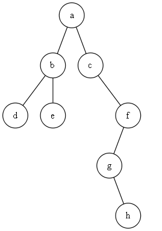
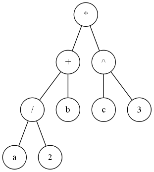
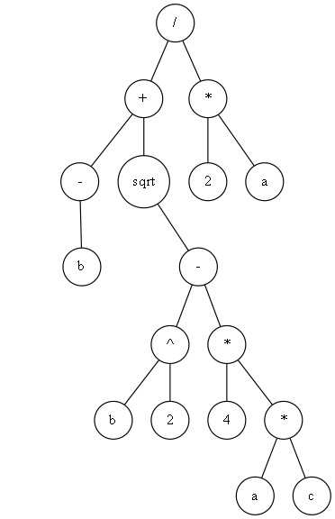
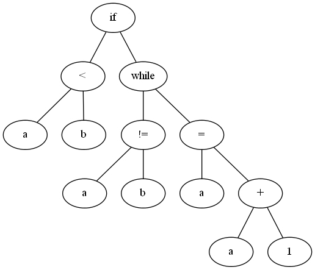
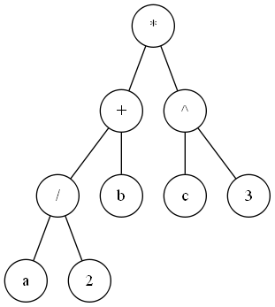
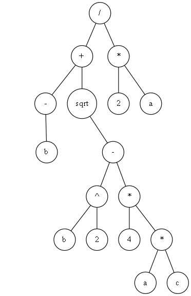
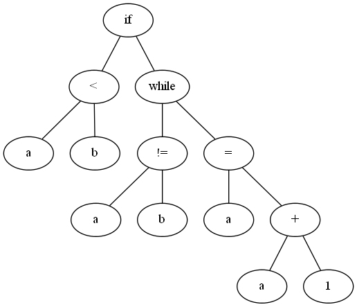

CS 31600 - Programming Assignment 1
This assignment makes use of the files contained in this zip file. This assignment is due Thursday, January 25.
This assignment is an application of binary tree traversals. The main goal of this assignment is for you to write Java methods that "prettyprint" a binary tree into a string.
In the zip file there are the BTree.java and Traversal.java files that we went over in class. In addition, there are four incomplete files, PrettyPrinter1.java, PrettyPrinter2.java, PrettyPrinter3.java and Hw1.java. Your assignment is to complete the four incomplete files.
The term "prettyprint" usually means finding a way to represent a tree as a text string. For example, this binary tree,

can be represented by the following string. Notice that trees are enclosed in a pair of parentheses, the root of a tree is printed right after the opening parenthesis, the two sub trees are printed below the root and slightly indented from it, and the closing parenthesis is printed on its own line just below its matching opening parenthesis. Also, the empty tree is treated as a special case and is represented by "()".
(a
(b
d
e
)
(c
()
(f
(g
()
h
)
()
)
)
)
This binary tree can also be represented by the following, more compact, string. In this string, small sub trees that have depth 1 are "inlined".
(a
(b d e)
(c
()
(f
(g () h)
()
)
)
)
This binary tree can be made even more compact. In this string, the root of every left child is "inlined" with its parent's root.
(a (b d e)
(c ()
(f (g () h)
()
)
)
)
In the file PrettyPrinter1.java, complete the method prettyPrinter() so that it implements the first kind of prettyprinting described above. In the file PrettyPrinter2.java, complete the method prettyPrinter() so that it implements the second kind of prettyprinting described above. And in the file PrettyPrinter3.java, complete the method prettyPrinter() so that it implements the third kind of prettyprinting described above.
In the zip file there are image files for five binary trees.
 





In the file Hw1.java, complete the Java declarations that instantiate binary trees that represent each of the binary trees in these image files (the first one is done for you). Then compile and run your program. The output of your program should look exactly like the contents of the file output.txt contained in the zip file.
The three prettyprinting methods are, for the most part, a variation on a preorder traversal of the binary tree. First you prettyprint the root, then you (recursively) prettyprint the left sub tree, then (recursively) prettyprint the right sub tree. For the first prettyprinter, you need to think about three cases, the empty tree, a tree of just a single node, and a tree with more than one node. For the second prettyprinter, you need to consider four cases, an empty tree, a tree of a single node, a tree of depth 0ne, and a tree of depth greater than one. For the third prettyprinter, you have the same four cases, but the root of the left child is always in-line with its parent's root (and be sure to keep opening and closing parentheses vertically aligned).
Turn in a zip file called CS316Hw1Surname.zip (where Surname is your last name) containing your versions of PrettyPrinter1.java, PrettyPrinter2.java, PrettyPrinter3.java and Hw1.java Be sure to put your name and email address in every file your turn in.
This assignment is due Thursday, January 25.